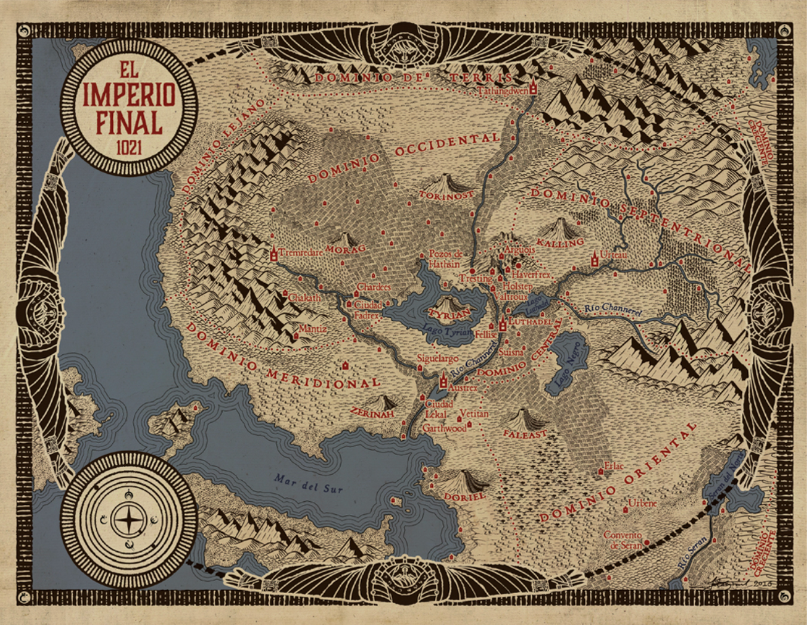

Cuaderno de lectura
Una ruta por
el Cosmere.
El orden de lectura de Brandon Sanderson, adaptado a tu punto de partida. En español y sin spoilers.
Ver mi rutaTu siguiente lectura
El pozo de la ascensión
Nacidos de la Bruma · Era 1
Tu avance se guarda en este navegador.
Biblioteca personal
Orden de lectura
Láminas de referencia
Mapas y guías de Nacidos de la Bruma en español.


Mapa de El Imperio Final Luthadel · Mapa y leyenda
Luthadel · Mapa y leyenda
 Alomancia · Guía de los ocho metales
Alomancia · Guía de los ocho metales
Tabla completa de metales
Incluye metales y efectos que se introducen después de El Imperio Final.
Abrir tabla completa
Referencias
De dónde sale la ruta
El video de 2024 da la secuencia base. Su guía escrita propone empezar por el primer tomo de cada serie y permite elegir entre varias puertas de entrada. Las pausas son opcionales. Revisada el 23 de noviembre de 2026.
Ver fuentes externas
Los enlaces externos pueden mostrar sinopsis de libros que aún no has leído.